HTML
IntermedioFrontend
INGENIERÍA EN SOFTWARE
Estudiante de Ingeniería en Software interesado en el desarrollo web, la programación y la creación de soluciones tecnológicas.
Soy estudiante de Ingeniería en Software, apasionado por la tecnología y el desarrollo de aplicaciones. Me interesa seguir aprendiendo y mejorar constantemente mis habilidades en programación y desarrollo web.

Mis principales áreas de interés son el desarrollo web, diseño de interfaces, programación, desarrollo de aplicaciones y creación de soluciones tecnológicas.

Frontend
Frontend
Frontend
Backend
Backend
Control de versiones
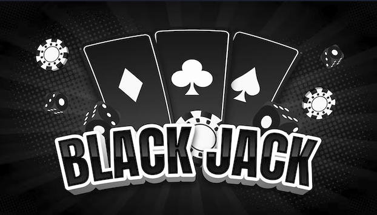
Proyecto web desarrollado con HTML, CSS y JavaScript. Consiste en un juego de Black Jack interactivo en el que se aplican lógica de programación, manipulación del DOM y diseño de interfaces.

Proyecto web interactivo desarrollado para poner en práctica la lógica de programación y el desarrollo de interfaces. El juego permite al usuario encontrar las parejas de cartas mediante diferentes niveles de dificultad.
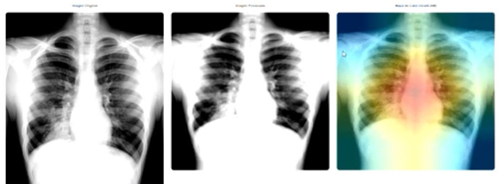
Sistema web desarrollado para el análisis automatizado de radiografías pulmonares mediante inteligencia artificial. Permite gestionar pacientes, realizar escaneos, consultar resultados y generar informes.
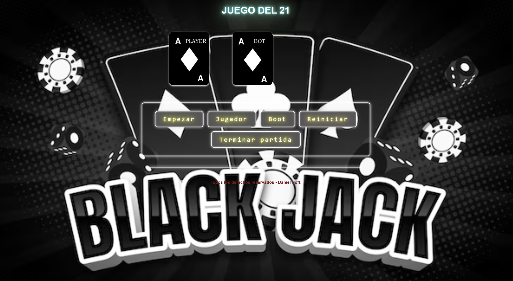
Pantalla de inicio
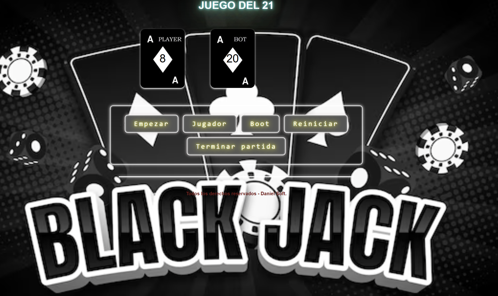
Pantalla jugando
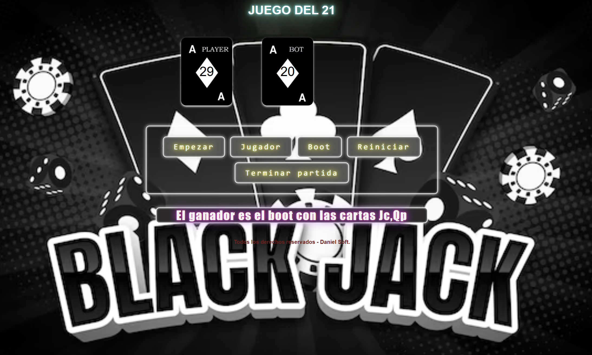
Pantalla de victoria
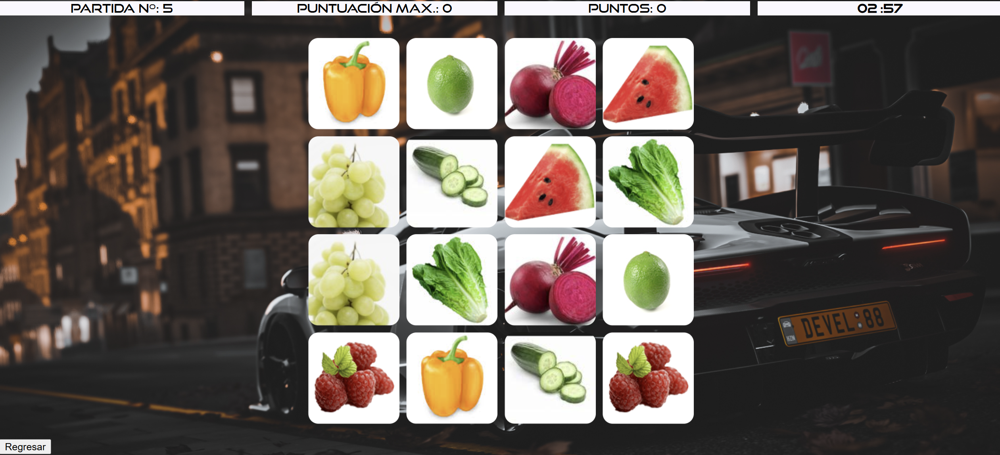
Modo fácil
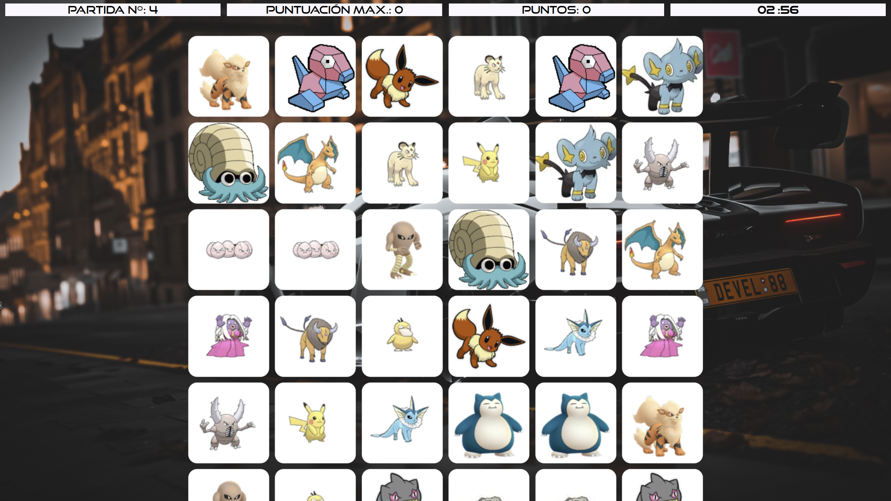
Modo medio
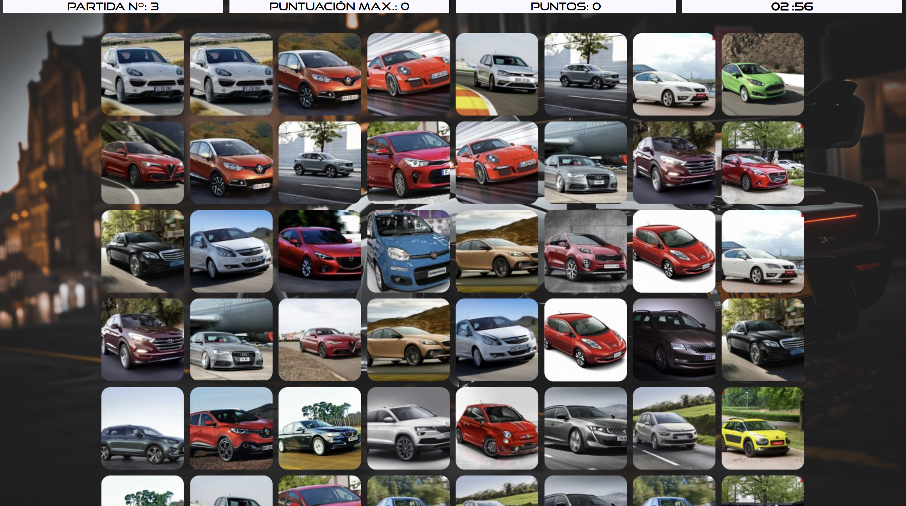
Modo difícil
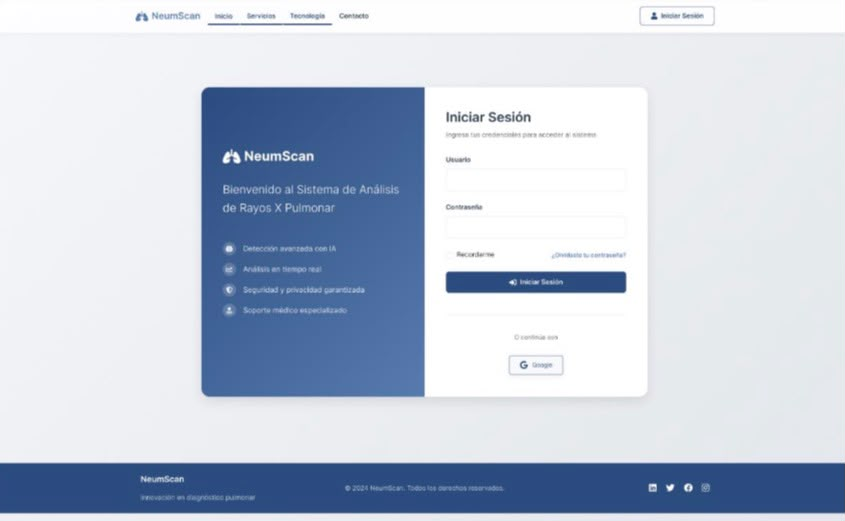
Página principal
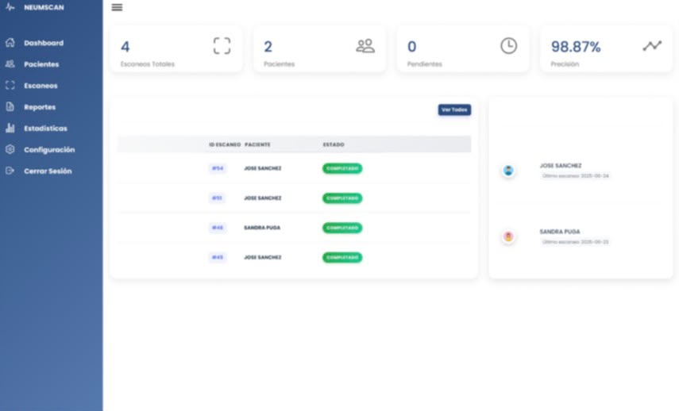
Dashboard
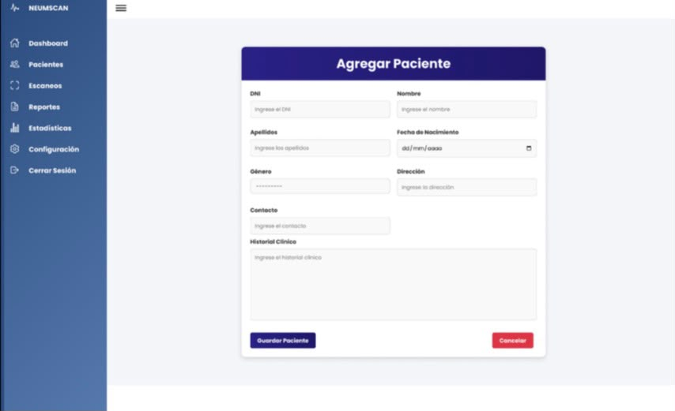
Agregar paciente
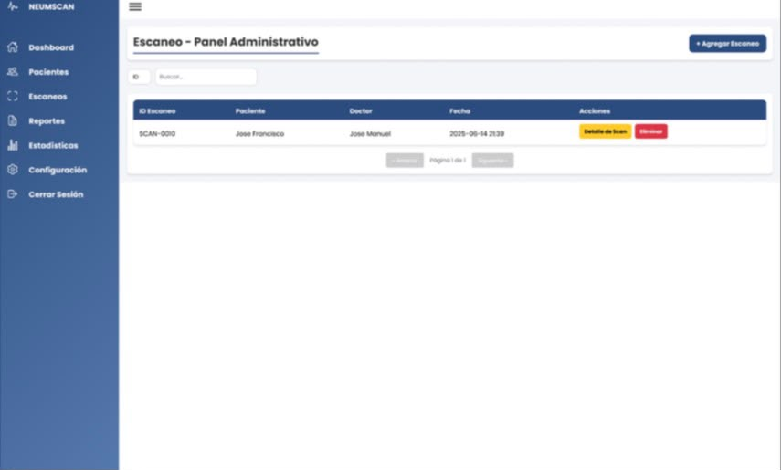
Escaneo
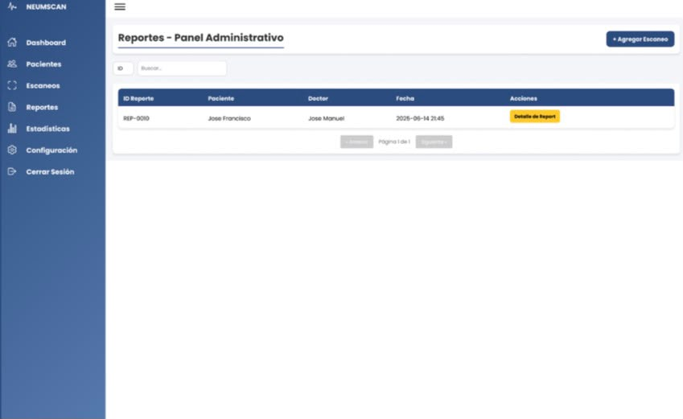
Reporte
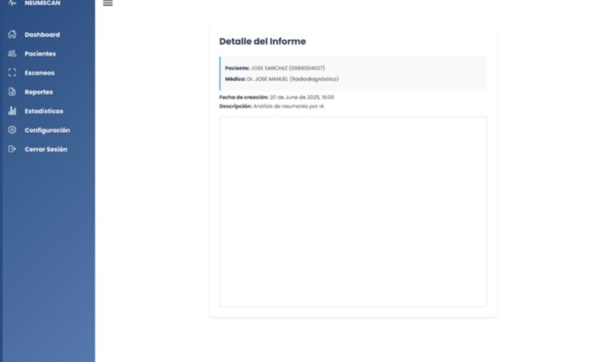
Detalle del informe
Sistema de diseño utilizado para mantener una apariencia consistente en el portafolio, incluyendo colores, tipografías, botones, tarjetas y componentes visuales.
Puedes ponerte en contacto conmigo para conocer más sobre mis proyectos y habilidades.